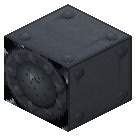
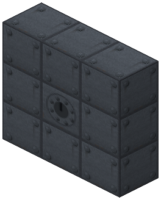
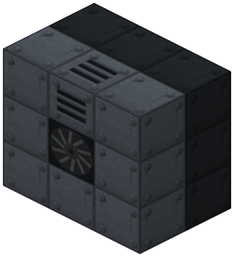
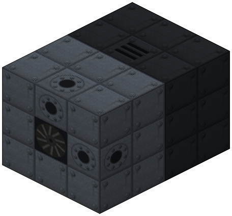
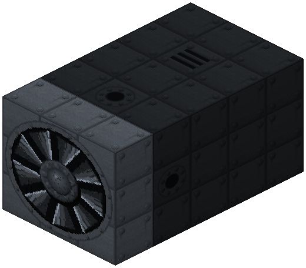
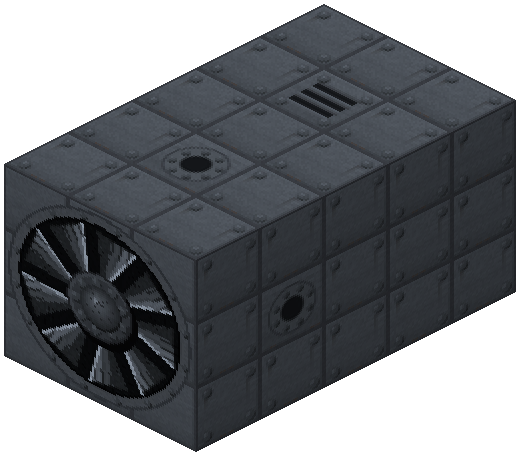

Steam Turbine Hub


3×3×(stages + 2) multiblock: hub on the face, stages 1–6 along the axis, shaft head, casing with a steam inlet and one exhaust. 40 hp per stage with falloff, superheated steam ×1.6, condenser ×1.25, cap set by stage material (up to 320 hp). Head: shaft or LV..EV EU generator (0.5 EU per hp). Zavod sensor card for Nuclear Control.
The steam turbine is a 3×3 multiblock 3–8 blocks long. It drives a shaft like a steam engine, but stronger and with less steam for the same work.
Assembly (the hub faces outward, everything else goes deeper behind it):
- face layer: the hub (controller) in the center, 8 casings around it, casing only. The assembled turbine draws a rotor on its face;
- stages 1–6 along the axis behind the hub: invar, cupronickel steel or monel (rolled on the rolling mill);
- shaft head on the axis behind the last stage; outside it — a shaft (
zavod:shaft) on the same axis; - ring around the stages and the head — casing with at least one steam inlet hatch and exactly one exhaust hatch (puffs of steam outside).
The head can be swapped without rebuilding: a generator head (LV 32, MV 128, HV 512, EV 2048 EU/t — set by the IC2 transformer in its recipe) outputs EU on all sides, 1 hp = 0.5 EU: 6 stages on saturated steam — 93.5 EU/t, with superheated steam and a condenser — 160 EU/t (needs HV). The head never goes above its packet — an LV head takes no more than 64 hp from the turbine. Steam is used only under grid load. A head above the machines' voltage — the machines burn (IC2 overload).
The exhaust can be a condenser instead of the open hatch. Pipe cooling water into it (5 mB per 100 mB of steam, 6 stages at full load — ~6 mB/t), pipe condensate out of it back to the boiler (steam / 160). With water the work for the same steam is ×1.25 (6 stages on saturated steam — 234 hp), without water — like an open hatch. No puffs.
Zavod sensor card (Nuclear Control): an NC text card + a circuit; click the hub with the card to link it, then put it into an information panel or console. Shows status, power, speed, steam, generator and condenser.
Power on saturated steam: 1 stage — 40 hp (like the high-pressure engine), 2 — 76, 3 — 108, 6 — 187. IC2 superheated steam (ic2superheatedsteam) — ×1.6: 6 stages — 300 hp. The cap follows the weakest stage: invar 100, cupronickel steel 200, monel 320 hp. Steam per 1 hp: 0.9 mB/t with one stage, 0.64 with six (piston engine — 1.0); superheated — another 1.6 times less.
Steam is used only under load; at idle ~5 % of rated keeps it spinning. Spin-up ~30 s, run-down ~30 s, power is proportional to speed — the turbine will not pick up the line instantly. On a line with steam engines and an electric drive the load is taken in order: electric drive → turbine → piston engines.
Click the hub with an empty hand — status: whether the frame is complete (if not — what is wrong), stages, material cap, delivered/rated, speed, steam per hp, generator (EU/t, buffer), condenser (water, condensate). Comparator at the hub — speed (0–15).
Parameters
| Era | 3 — Electricity |
|---|---|
| Multiblock | yes: 3x3xL frame: casing, stages along the axis, head, hatches |
| Drive | drives the shaft |
| Tanks, mB | 16000 |
| What it does | multiblock 3×3×(stages+2): steam -> shaft or EU (head), power cap set by stage material; condenser ×1.25 |
| Input energy | steam (saturated, IC2 superheated), condenser cooling water |
| Output | shaft 40…320 hp or EU LV..EV up to 160 EU/t; condensate |
| Made of | see §2, docs/turbine.md |
| hp (Steam Turbine) | 40 for 1 stage … 187 for 6; condenser 234; superheated 300, + condenser 320 |
Numbers
| steam turbine: first stage power | 40 hp |
|---|---|
| turbine: each next stage gives this % of the previous one | 90 % |
| turbine: steam per 1 hp with one stage (piston engine — 1000) | 900 0.001 mB/hp/t |
| turbine: steam per hp divided by 1 + this × (stages − 1) | 8 % |
| turbine: IC2 superheated steam work multiplier | 160 % |
| turbine: cap with invar stages | 100 hp |
| turbine: cap with cupronickel steel stages | 200 hp |
| turbine: cap with monel stages | 320 hp |
| turbine: max stages (frame length = stages + 2) | 6 |
| turbine: idle burns this share of nominal steam | 5 % |
| turbine: spin-up from zero to full speed | 600 ticks |
| turbine: run-down to stop without steam | 600 ticks |
| turbine: hub steam tank | 16000 mB |
| turbine: condenser exhaust work multiplier | 125 % |
| turbine: condenser cooling water per 100 mB of steam | 5 mB/100 mB |
| turbine: condensate = steam / this (water -> steam in Railcraft is 1:160) | 160 |
| turbine: generator head, EU per 1 hp | 500 0.001 EU/hp |
| turbine: generator buffer in packets of its tier | 2 packets |
| gas turbine: max compressor stages | 3 |
| gas turbine: max turbine stages (and no more than compressor stages) | 3 |
| diesel: max cylinders | 6 |
Fed by
- steam ← Reactor Steam Generator
Feeds
- no Zavod machine uses its product
Assembly
Any build order: the frame is re-checked when parts are placed or broken. Face layer is casing only, hatches go behind it.

Back layer: the head in the centre (shaft out along the axis, or an EU generator LV–EV), 8 casings around it. The shaft leaves the head backwards along the axis.

First stage in a ring of casing. Exactly one exhaust goes into the ring of any layer behind the face: open or a condenser.

More stages on the axis (1–6 total, 3 here): invar, cupronickel steel, monel; power cap by the weakest. At least one steam inlet hatch in the ring behind the face (two here).

Face: the hub (controller) facing out, 8 casings around it draw the rotor. Frame 3x3x(stages + 2) done.

Faded blocks were placed in earlier steps.